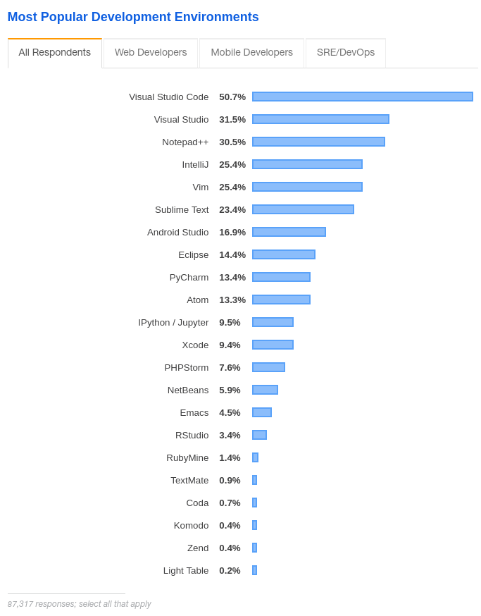

- Fri 14 August 2020
- Software Development
- #vim, #neovim, #lsp
In this post, I build a “coc.nvim” extension that wraps an executable language server. By the end of this article, you should both understand what makes coc a stand-out LSP client and be able to write your own coc extension.
For the interactive parts of this post, you’ll need the following:
- A POSIX-compliant terminal (bash, zsh, etc), or the ability to translate
- git
- Node.js>=8.10.0
- yarn>=1.22.4
- Vim 8+ or Neovim 0.4.4+
- coc.nvim==0.0.78 (might work on newer versions, but no promises)
- Some knowledge of TypeScript might be helpful
Please disable Python-specific coc extensions (coc-jedi, etc). Some terminology used throughout the post:
- Vim: Vim or Neovim
- vimrc:
~/.config/nvim/init.vimfor Neovim or~/.vimrcfor Vim - coc-settings.json:
~/.config/nvim/.coc-settings.jsonby default
Background¶
coc.nvim, short for “conquer of completion”, is an lsp client that targets Vim. Vim (or NeoVim) is my favorite text editor / IDE. I like its extensibility, flexibility, and in-terminal slickness. Vim has tools and plugins that make it easy to program in different programming languages. Here are some examples:
- JavaScript intellisense: tern_for_vim
- Ruby on rails intellisense: vim-rails
- General linting: syntastic
- Python intellisense: jedi-vim
Vim’s diverse plugins and community-supported tooling are what keep me coming back, but not all developers are like me. Visual Studio Code, Nodepad++, and others were more popular than Vim in the 2019 StackOverflow developer survey:

These popularity differences are starker across programming language communities. For example, Vim’s Java development environment was historically abysmal enough to generate some heated conversations. My non-scientific evaluation of the community’s sentiment: obstinate, impractical developers used Vim for Java development while practical, no-nonsense creators preferred Eclipse. Because of this sentiment, tooling for Java evolved in the Eclipse world while Vim’s Java support remained neglected.
The Java pattern mentioned in the previous paragraph happens, to some extent, in all programming languages. Developers became drawn to editors best-supported their language of choice: PyCharm/Vim for Python, Eclipse for Java, VSCode for TypeScipt/JavaScript, etc. This, in turn, forced developers into mind-bending context switches when changing languages. To become proficient with a new programming language, a developer needed to learn a whole new text editor and tooling ecosystem! Like asking a Jedi to use another Jedi’s light saber, forcing a developer to learn and use Emacs because it has better support for <insert language here> can evoke uncomfortable feelings (at best):

The rise of full stack development and our general expectation that developers be comfortable writing code in more than one language made it so that by mid 2015, we seemed all-but doomed to a life of eternal context switching.

When society was on the brink, the developers behind VSCode had a big idea: if we separate the tools that understand languages from the tools that edit text, and then give these separate tools a communication protocol, this could enable Vim users to use the same language tools that power Eclipse and VSCode (and vise versa). They called this communication mechanism the “language server protocol”.

Language Server Protocol¶
The “Language Server Protocol” (LSP) is a specification that describes communication between a “language client” and a “language server”. The following definitions come from the lsp spec overview:
- Language server: a program that contains language-specific “smarts” that can communicate with development tooling through the LSP
- Language client: a program, developed in the environment of a “development tool”, that can send, receive, and act on LSP messages with a “language server”
- Development tool: Vim, Neovim, VS Code, Eclipse, etc. Basically, a text editor or IDE that software developers use to develop software

Above, the language client is sitting in the development tool and sending JSON-RPC requests to a language server. All this basically means that your text editor is asking questions to an entity that knows way more about your programming language and responding to its suggested actions. These actions may range from “you should autocomplete some text” to “find this symbol’s definition by opening this file and navigating to this precise position. In short, the orchestrated communication outlined above realizes the following dream:
- Language tooling developers write 1 program (the language server) to target every development tool (Vim, VS Code, etc)
- Development tool developers write 1 program (the language client) that knows how to communicate with all language servers
- Software developers have first-class language support for all languages in their favorite editor; no more text-editor context switching!
The above dream seemed like it would herald a new dawn for developers: we can use our favorite tools and have similar, powerful programming language support! As the auguries looked good and a golden age seemed imminent, VSCode’s popularity began generating some bad, familiar omens…

VSCode: client power¶
The LSP dream described in the previous section was similar to Tim Berners-Lee‘s dream for a world wide web: web clients, supporting web protocols, could enable communication between web servers and a user environment (the operating system). This dream sparked development of all sorts of web clients (browsers) and culminated in the first browser war. According to Wikipedia, during this time, Netscape Navigator and Internet Explorer implemented proprietary html tags like <blink> for Navigator and <marquee> for Internet Explorer. They also rapidly developed their own features and began diverging from W3C‘s recommended spec. This resulted in efficient Internet Explorer HTML being less efficient or broken on Navigator (and vise versa). This forced users to pick browsers based on custom compatibility with their favorite sites and ultimately resulted in United States v. Microsoft Corp. Basically, things got ugly.

Although what is happening today in the text editing community is tamer, it resembles the first browser war in that VSCode has become the de-facto standard for Language Clients. Authors of Language Servers may target VSCode without fully supporting the current LSP spec or by inadvertently supporting VSCode features that are not in the spec. This means that Atom users might be using a correctly-implemented language client that does not work with certain language servers. Additionally, there may be no way to easily configure certain language servers without VSCode’s configuration options. This means that if you want to get the best language support possible across all language servers, as of August 2020, you pretty much need to use something that resembles VSCode.

As the VSCode ecosystem seemed like it had formed an exclusive clique, Qiming zhao (@chemzqm on social media) realized that Vim could join the party by implementing a VSCode bridge for Neovim. Qiming zhao named this LSP bridge “coc.nvim”.

coc.nvim¶
coc.nvim is a language client for Vim that can be configured similarly to VSCode. Vim is configured with Vim script, C, lua (if using Neovim), and any other language if you’re feeling fancy enough these days. VSCode is configured with json and TypeScript. “coc.nvim” makes it so we can configure “coc.nvim”-managed features using json and typescript while still being able to use Vim’s configuration for everything else. Basically, it’s this:

Register a language server¶
Without an extension, coc behaves like a simple language client. For simplicity’s sake, let’s assume we’re all Python developers and that we’d like to use a language server named jedi-language-server with Vim.
Within your current Python environment, install jedi-language-server:
pip install jedi-language-server
Now run jedi-language-server:
jedi-language-server
Notice that the process hangs; it’s waiting to receive standard input and will respond with standard output. This server can run inside of Vim by placing the following code in the languageserver section of your coc-settings.json:
{
"languageserver": {
"python": {
"command": "jedi-language-server",
"filetypes": ["python"]
}
}
}
If you’ve configured coc.nvim and installed jedi-language-server in an accessible location, Vim and jedi-language-server will communicate to provide you autocompletion, goto definition, etc. Hooray!

Manual configuration
It turns out there are some practical problems with expecting users to configure jedi-language-server manually:
- Remembering to manually install a language server can annoy people; shouldn’t the editor remember to do that?
- We’d like to configure the language server; can’t that configuration have pretty autocompletion and look like the configuration I can use with all the other VSCode-like configuration options?
- It’s good UX to prevent preventable problems.
This is where coc extensions come into play: they avoid the above problems by providing default configurations and features. Users can seamlessly use a language server with an extension.

Writing an extension¶
We will address 2 requirements in this post:
- Prevent the user from needing to write manual configuration for jedi-language-server in coc-settings.json
- Allow the user to configure the server as “disabled” if needed
The reader may address other requirements as a post-blog exercise.
Project skaffolding
In ~/src, use create-coc-extension to create a project skeleton:
$ yarn create coc-extension coc-jls
...
? Project title: coc-jls
? Project description: A great project
? Author full name: Your name
? Author email address: your.name@domain.com
? Initialize a git repository? Yes
? Install node dependencies? Yes
installing node dependencies...
Done...
$ cd coc-jls
$ yarn
You should have the following version-controlled files in coc-jls:
LICENSE
README.md
package.json
src/
index.ts
lists.ts
tsconfig.json
webpack.config.js
yarn.lock
Delete the files in src; we’ll be writing these from scratch.
First file
To get a simple wrapper around an existing jedi-language-server executable, place the following code in src/index.ts:
import { ExtensionContext, services, workspace, LanguageClient } from 'coc.nvim'
export async function activate(context: ExtensionContext): Promise<void> {
const serverOptions = {
command: 'jedi-language-server', // run jls
}
const clientOptions = {
documentSelector: ['python'], // run jls on py files
}
const client = new LanguageClient(
'coc-jls', // the id
'coc-jls', // the name of the language server
serverOptions,
clientOptions
)
context.subscriptions.push(services.registLanguageClient(client))
}
This code tells coc to register a new language server named coc-jls that executes the command jedi-language-server when Vim edits Python file(s). Now build the project with the following command:
yarn
Open an empty file (test.py works) with Vim and run the following command:
:set runtimepath^=~/src/sandbox/coc-jls
This command will help coc discover your extension. Depending on your coc configuration, you should see diagnostics, have autocompletion, etc. In the long term, you may want to manage your coc extension as a plugin or a Vim package, but we’ll stay local and simple for now.
User configuration
We’ve wrapped jedi-language-server with a coc extension and now it’s time to add some user configuration! Coc provides a simple mechanism to help users communicate their configuration values like VSCode: through the package.json. Make sure the following lines are in your package.json:
{
"contributes": {
"configuration": {
"type": "object",
"title": "coc-jls configuration",
"properties": {
"coc-jls.enabled": {
"type": "boolean",
"default": true,
"description": "Enable coc-jls extension"
}
}
}
}
}
This says that the coc-jls extension contributes a configuration key coc-jls.enabled whose default value is true. If a user wants to disable coc-jls, they must add the following line to the top level of coc-settings.json:
{
"coc-jls.enabled": false
}
Now we must add some logic to our typescript code to read the user configuration and disable the server if the user has chosen not to have it enabled:
import { ExtensionContext, services, workspace, LanguageClient } from 'coc.nvim'
export async function activate(context: ExtensionContext): Promise<void> {
// BEGIN NEW CODE
const config = workspace.getConfiguration('coc-jls')
const isEnable = config.get<boolean>('enable', true)
if (!isEnable) {
return
}
// END NEW CODE
const serverOptions = {
command: 'jedi-language-server', // run jls
}
const clientOptions = {
documentSelector: ['python'], // run jls on py files
}
const client = new LanguageClient(
'coc-jls', // the id
'coc-jls', // the name of the language server
serverOptions,
clientOptions
)
context.subscriptions.push(services.registLanguageClient(client))
}
Now run yarn and voilà: users can now disable coc-jls without needing to uninstall the extension. Success!
Deployment¶
To “deploy” this extension, one approach is to upload your project GitHub, add it to your Package or Plugin manager configuration, and install. If you’re using Vim-Plug, put the following in your vimrc:
Plug 'your-username/coc-jls', {'do': 'yarn install --frozen-lockfile && yarn build'}
And run:
:PlugInstall
This will download your Git repository, install all necessary dependencies, build your project, and make sure it’s automatically added to Vim’s runtime path for coc can discover the extension.
You can also do all this manually if you know what you’re doing.
Coc extensions can also be deployed to npm. This method is out of scope for this post, but you should be able to figure it out by referencing the coc-jedi codebase.
Wrapping up¶
At this point, you should have a working coc extension that wraps an executable language server. You may be wondering how you can add more features, automatically download and manage the executable for your users, and make your coc extension the most user friendly interface since the iPod click wheel. Worry not: these features are implemented in coc-jedi. Please refer to that codebase and ask any further questions in the comments below. And don’t feel obligated to restrict your wanderings to jedi-language-server: you can wrap any executable language server in a coc extension! Please use your powers for good.